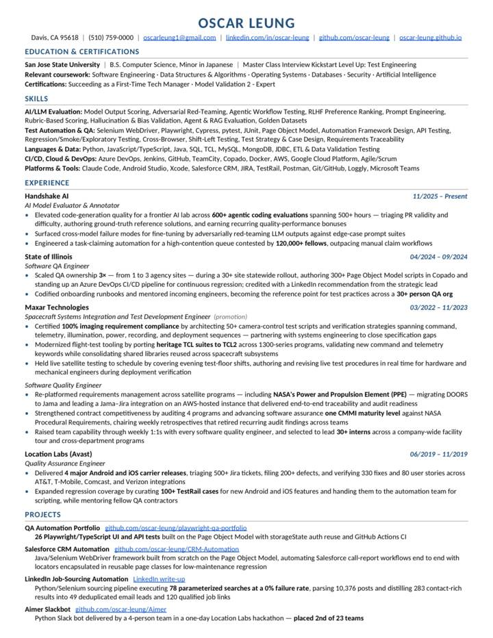

Résumé & CV
Both are readable right here — nothing to download unless you want to.
The one-page version — the fastest read if you're screening.

Prefer a copy? Save the PDF.
Both are readable right here — nothing to download unless you want to.
The one-page version — the fastest read if you're screening.

Prefer a copy? Save the PDF.